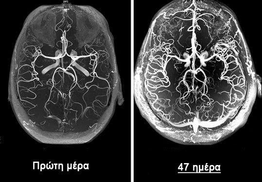
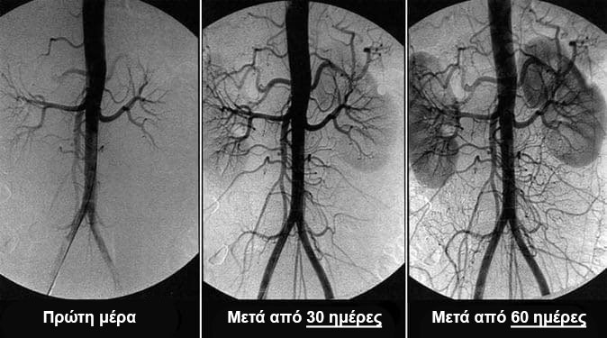

Τι να κάνετε εάν έχετε πονοκέφαλο, εμβοές και μούδιασμα των άκρων;
Σημάδια δυστονίας των εγκεφαλικών αγγείων
Σπύρος Πλιάτσικας
Η εγκεφαλική αγγειακή δυστονία είναι η παθολογική κατάσταση κατά την οποία διαταράσσεται ο αγγειακός τόνος και η φυσιολογική κυκλοφορία του αίματος στους εγκεφαλικούς ιστούς. Σε αυτό το άρθρο, μπορείτε να διαβάσετε για τα αίτια, τους μηχανισμούς και τα συμπτώματά του, οπότε ήρθε η ώρα να ηχήσει ο συναγερμός. Και επίσης για τις σοβαρές επιπλοκές αυτής της ύπουλης ασθένειας και για τη σύγχρονη προσέγγιση της θεραπείας, προσβάσιμη σε όλους.
Η δυστονία των εγκεφαλικών αγγείων επηρεάζει την απόδοση ολόκληρου του οργανισμού. Λόγω της ανεπαρκούς παροχής αίματος στον εγκέφαλο, η συνολική απόδοση μειώνεται, εμφανίζεται αδυναμία και σημαντικά συστήματα του σώματος αρχίζουν να δυσλειτουργούν.
Τα αρχικά συμπτώματα της εγκεφαλικής δυστονίας είναι:
Πονοκέφαλος
Θόρυβος στα αυτιά
Γενική αδυναμία, απάθεια, υπνηλία
Χαμηλή ικανότητα εργασίας
Διαταραχές ύπνου, αϋπνία
Διαταραχές μνήμης
Αίσθημα μουδιάσματος στα άκρα
Οίδημα χεριών και ποδιών
Αίσθηση σκοταδιού μπροστά στα μάτια
Μειωμένη όραση
Ορμονικές διαταραχές στον οργανισμό
Η δυστονία των αγγείων του εγκεφάλου είναι το πρώτο σημάδι πλήρους «απόφραξης» των αγγείων του σώματος με χοληστερόλη, μια κατάσταση που ονομάζεται αθηροσκλήρωση. Τα αγγεία του εγκεφάλου είναι τα πιο ευαίσθητα και λεπτά, επομένως υποφέρουν πρώτα απ 'όλα.
Η θεραπεία της κυκλοφορίας του αίματος των εγκεφαλικών αγγείων βασίζεται στον καθαρισμό των αγγείων ολόκληρου του οργανισμού από συσσωρευμένα υπολείμματα. Οι πλάκες χοληστερόλης, οι θρόμβοι αίματος και άλατα ασβεστίου
Πώς μπορείτε να καθαρίσετε τα αιμοφόρα αγγεία στο σπίτι;
Η αποκατάσταση της κυκλοφορίας του αίματος και ο καθαρισμός των αιμοφόρων αγγείων είναι μια πολύπλοκη διαδικασία. Αυτό επηρεάζει όλα τα αγγεία του σώματος και συχνά βελτιώνει την ποιότητα ζωής.
Μάθετε πώς να καθαρίσετε τα αιμοφόρα αγγεία σας, πώς να απαλλαγείτε από εκατοντάδες «χρόνιες» ασθένειες και πώς να αποκτήσετε άλλα 20 χρόνια υγιούς ζωής σε αυτή τη συνέντευξη διαβάστε περισσότερα.
Πόσο επικίνδυνη είναι η αγγειακή εγκεφαλική δυστονία;
Ποιες είναι οι απειλές της αγνόησης των συμπτωμάτων;
Γιατί είναι επικίνδυνα τα αγγειοδιασταλτικά;
Ποια είναι η σχέση μεταξύ των εγκεφαλικών αγγείων, του υπερβολικού βάρους, των αρθρώσεων και της σεξουαλικής ισχύος;
Πώς να αποκαταστήσετε την κυκλοφορία του αίματος και να ενισχύσετε τα αιμοφόρα αγγεία μόνοι σας;
Σε αυτά τα ερωτήματα απάντησε
Προϊστάμενος του Τμήματος Εγκεφαλοαγγειοχειρουργικής του Ιδιωτικού Ιατρικού Ινστιτούτου,
ειδικός στον τομέα της νευροχειρουργικής, κ. Γιάννης Πρίντεζης.
Ο κ. Πρίντεζης θεωρείται ένας από τους καλύτερους νευροχειρουργούς στον κόσμο. Είναι ο συγγραφέας μοναδικών χειρουργικών μεθόδων που χρησιμοποιούνται σε όλο τον κόσμο.
Ο κ. Πρίντεζης είναι βέβαιος ότι το μέσο προσδόκιμο ζωής στη χώρα μας μπορεί να αυξηθεί στα 89-93 χρόνια, όπως στις ανεπτυγμένες χώρες. Αν αρχίσουμε να εξηγούμε λεπτομερώς στους πολίτες τη σημασία του καθαρισμού των αιμοφόρων αγγείων μετά από 40 χρόνια.
Πόσο επικίνδυνη είναι η αγγειακή εγκεφαλική δυστονία;
- Κύριε Πρίντεζη, ποια συμπτώματα πρέπει να έρθουν πρώτα στην αντίληψή μας;
- Στο αρχικό στάδιο, η δυστονία των εγκεφαλικών αγγείων εκδηλώνεται ανεπαίσθητα. Οι περισσότεροι δεν δίνουν σημασία στα συμπτώματα και τα ίδια τα συμπτώματα έρχονται και παρέρχονται.
Τα πρώτα σημάδια εγκεφαλικού αγγειακού ατυχήματος:
Εμβοές που εμφανίζονται χωρίς λόγο
Πετάει μπροστά στα μάτια
Αίσθημα μουδιάσματος στα δάχτυλα και το πρόσωπο
Πονοκέφαλοι στο μέτωπο και τους κροτάφους
Απότομα άλματα στην πίεση (σκουραίνει μπροστά στα μάτια με απότομη αλλαγή στη θέση του σώματος)
Παγώστε τα πόδια και τα χέρια
Όταν τα αιμοφόρα αγγεία είναι κατεστραμμένα, αναπτύσσονται ορισμένες χρόνιες ασθένειες:
Υψηλή πίεση του αίματος
Πόνος στις αρθρώσεις, μύες, κράμπες στα άκρ
Ταχυκαρδία
Φλεβεύρυσμα και φλεβική θρόμβωση
Επιδείνωση της σεξουαλικής ισχύος, διεύρυνση του προστάτη στους άνδρες
Αργός μεταβολισμός και μειωμένος μεταβολισμός λίπους
Αν και δεν είναι «οξεία» ασθένεια, η επιδείνωση της κυκλοφορίας του αίματος του εγκεφάλου είναι πολύ ύπουλη. Στο τέλος, αργά ή γρήγορα οδηγεί σε εγκεφαλικό, αλλά πριν από αυτό βασανίζει ένα άτομο, σκοτώνοντας σιγά-σιγά τη ζωτική δραστηριότητα των οργάνων και προκαλώντας μια ολόκληρη δέσμη διαφορετικών ασθενειών.
Όλες αυτές οι ασθένειες είναι συνέπειες. Συνέπειες αγγειακής αθηροσκλήρωσης, εναποθέσεις πλακών χοληστερόλης και θρόμβων αίματος στα τοιχώματα των αιμοφόρων αγγείων. Δυστυχώς, μόνο κάποιοι προσέχουν τον καθαρισμό των αγγείων, συνεχίζοντας να υποφέρουν για χρόνια και να πίνουν περιττά χάπια από τις χρόνιες παθήσεις τους.
- Ναι, δυστυχώς, ο λαός μας δεν γνωρίζει τη σημασία του καθαρισμού των σκαφών.
- Δεν φταίνε αυτοί. Τι μπορείτε να μιλήσετε όταν 99 στους 100 ειδικούς δεν έχουν ακούσει τίποτα για τα θρεπτικά συστατικά και την ανάγκη χρήσης τους για τον καθαρισμό των αιμοφόρων αγγείων.
Σε ανεπτυγμένες χώρες: ΗΠΑ, Καναδάς, Ιαπωνία, Ελβετία για 11 χρόνια σε νομοθετικό επίπεδο, τα διατροφικά προϊόντα προσφέρονται μία φορά κάθε 4 χρόνια σε κάθε πολίτη άνω των 40 ετών. Άλλοτε δωρεάν, άλλοτε μέσω ασφάλισης υγείας. Ελέγχεται από το κράτος.
Ποιες είναι οι απειλές της αγνόησης των συμπτωμάτων;
- Τι να κάνετε εάν αγνοήσετε τα συμπτώματα «απόφραξης» των αιμοφόρων αγγείων και υποβάλλετε σε θεραπεία μόνο προφανείς ασθένειες;
Οι ασθένειες θα εξελιχθούν παρά την οποιαδήποτε φαρμακευτική θεραπεία. Ναι, μπορούν να «ανακουφιστούν» με χάπια, μπορείτε να πάτε σε χειρουργούς, αλλά ο λόγος δεν θα εξαφανιστεί πουθενά.
Και όσο περισσότερη ρύπανση συσσωρεύεται στα πλοία, τόσο πιο σοβαρές θα είναι οι συνέπειες.
Με απόφραξη εγκεφαλικών αγγείων μέτριας ή σοβαρότερης σοβαρότητας, εμφανίζονται τα ακόλουθα προβλήματα:
Με σοβαρό βαθμό αγγειακής μόλυνσης, τις περισσότερες φορές μπορεί να εμφανιστούν εγκεφαλικά επεισόδια και πλήρης ή μερική παράλυση.
Γιατί είναι επικίνδυνα τα αγγειοδιασταλτικά;
- Είναι αλήθεια ότι τα αγγειοδιασταλτικά κάνουν περισσότερο κακό παρά καλό;
- Ναί. Τα αγγειοδιασταλτικά είναι καλά για επείγουσες καταστάσεις. Η συχνή εισαγωγή τους δημιουργεί τεράστιο φορτίο στα τοιχώματα των αιμοφόρων αγγείων.
Τα φτωχά αγγεία υποφέρουν πολύ από τα συσσωρευμένα «στρώματα» χοληστερόλης, τα οποία διαβρώνουν τα τοιχώματα του επιθηλίου, καθιστώντας το πιο λεπτό. Και οι αγγειοδιασταλτικοί παράγοντες διαστέλλουν τα αιμοφόρα αγγεία, δημιουργώντας υπερένταση των τοιχωμάτων. Εάν αυτή τη στιγμή το αγγείο δεν αντισταθεί και σπάσει, τότε συμβαίνει εγκεφαλικό.
Για το λόγο αυτό, σας συμβουλεύω να λαμβάνετε αγγειοδιασταλτικά πολύ προσεκτικά και μόνο σε εξαιρετικές περιπτώσεις.
Ποια είναι η σχέση μεταξύ των εγκεφαλικών αγγείων, του υπερβολικού βάρους, των αρθρώσεων και της σεξουαλικής ισχύος;
- Γιατί οι γυναίκες παίρνουν συχνά βάρος σε περίπτωση διαταραχών της κυκλοφορίας του εγκεφάλου, οι άντρες χάνουν τη «δύναμη» και γίνονται ανίκανοι και οι αρθρώσεις και η σπονδυλική στήλη αρχίζουν να καταρρέουν;
- Όταν τα αγγεία του εγκεφάλου είναι «φραγμένα» με πλάκες, τότε λαμβάνουν λιγότερα θρεπτικά συστατικά. Κάθε χρόνο μετά την ηλικία των 40 ετών, ο εγκέφαλος λαμβάνει 5% λιγότερα θρεπτικά συστατικά.
Ως εκ τούτου, μέχρι την ηλικία των 50 ετών, η διατροφή του εγκεφάλου επιδεινώνεται κατά το ήμισυ
Τι κάνει ο εγκέφαλος όταν δεν λαμβάνει αρκετά θρεπτικά συστατικά;
1. Νομίζει ότι πεινάμε και μας βάζει να φάμε.
Αλλά ανεξάρτητα από το πόσο τρώτε, τα βουλωμένα αγγεία εμποδίζουν την παροχή αρκετών θρεπτικών συστατικών στον εγκέφαλο. Αλλά κάπου πρέπει να πάνε. Και το σώμα τα τοποθετεί σε αποθήκευση, έτσι εμφανίζονται εναποθέσεις λίπους.
2. Στη λειτουργία "πείνας", ο εγκέφαλος νομίζει ότι πεθαίνουμε, οπότε απενεργοποιεί "περιττές" λειτουργίες για την επιβίωση του σώματος.
Η αναπαραγωγική λειτουργία δεν χρειάζεται από τον πεινασμένο εγκέφαλο, επομένως η λειτουργία της ισχύος και η λίμπιντο μειώνονται. Μειώνει την παραγωγή της ανδρικής ορμόνης τεστοστερόνης. Αυτό, με τη σειρά του, προκαλεί αύξηση του μεγέθους του προστάτη και ανάπτυξη προστατίτιδας.
Η λειτουργία ανάκτησης είναι πολύ ενεργοβόρα και ο εγκέφαλος την «σβήνει» μέχρι καλύτερες στιγμές. Οι ιστοί των αρθρώσεων δεν αναγεννώνται πλέον: χόνδροι, οστά, μειώνουν την παραγωγή αρθρικού υγρού (λίπανση αρθρώσεων). Πόνος στις αρθρώσεις, οστεοχόνδρωση, αρθρίτιδα.
Πώς να αποκαταστήσετε την κυκλοφορία του αίματος και να ενισχύσετε τα αιμοφόρα αγγεία;
- Είναι δυνατόν να καθαρίσετε τα αιμοφόρα αγγεία και να αποκαταστήσετε την κυκλοφορία του αίματος μόνοι σας;
- Ναί. Δεν είναι δύσκολο, αλλά θέλει υπομονή και πειθαρχία. Αξίζει όμως τον κόπο και η προσπάθεια θα ανταμειφθεί.
Το Ινστιτούτο Αγγειοχειρουργικής και Καρδιολογίας έχει αναπτύξει ένα μοναδικό προϊόν - "". Οι ειδικοί του ινστιτούτου δημιούργησαν ένα προϊόν που δεν έχει ανάλογα σήμερα. Το είναι απολύτως ασφαλές, δεν έχει παρενέργειες και μπορεί να ληφθεί χωρίς την επίβλεψη ειδικού..
Το καθαρίζει τα αγγεία από όλα τα είδη αποθήκευσης:
Πλάκες χοληστερόλης
Θρόμβοι αίματος
Άλατα ασβεστίου
Αποτελέσματα χρήσης :

Για 1,5 μήνα λήψης , η κυκλοφορία του αίματος αποκαθίσταται κατά 99,71%
Είναι σημαντικό η κυκλοφορία του αίματος να αποκαθίσταται συστηματικά: σε όλα τα αγγεία, τις αρτηρίες και τα τριχοειδή αγγεία.

Το παράγεται με τη μορφή καψουλών - αυτή είναι η "τεχνογνωσία", το καμάρι των επιστημόνων μας. Αυτό παρέχει σχεδόν 100% αγγειακό καθαρισμό χάρη στα ενεργά κλάσματα εκχυλισμάτων CO2 που διεισδύουν στις πλάκες χοληστερόλης και τις διαλύουν από μέσα.
Καθαρίζοντας τα αιμοφόρα αγγεία, το αποκαθιστά τη φυσιολογική διατροφή του εγκεφάλου. Αρχίζει η αλυσιδωτή αντίδραση ανάκαμψης.
Πώς λειτουργεί η τονερίνη στο σώμα;
- Το λειτουργεί σε 3 βήματα:
1. Αφαιρεί τις εναποθέσεις από τα αιμοφόρα αγγεία
Διαλύει τις αθηρωματικές πλάκες, τους θρόμβους αίματος και τα άλατα ασβεστίου. Αυξάνει τον αυλό των αιμοφόρων αγγείων έως και 99,71% του κανόνα και αποκαθιστά την κυκλοφορία του αίματος.
2. Εξαλείφει τις επιπτώσεις της κακής κυκλοφορίας
Εξαλείφει ή ανακουφίζει σημαντικά τα συμπτώματα ασθενειών όπως: υψηλή αρτηριακή πίεση, πονοκεφάλους, κιρσούς, θρόμβωση, αιμορροΐδες, προστατίτιδα. Ο θόρυβος στα αυτιά, η ζάλη, το πρήξιμο εξαφανίζεται, η οπτική οξύτητα και η καθαρότητα της σκέψης βελτιώνονται. Ομαλοποιεί το βάρος και το μεταβολισμό των λιπιδίων.
3. Αυξάνει την αντοχή και την ελαστικότητα των τοιχωμάτων των αγγείων
Αυτό αποτρέπει το σχηματισμό νέων πλακών και μειώνει τον κίνδυνο εγκεφαλικού κατά 11 φορές.
- Πόσο συχνά και για πόσο καιρό πρέπει να παίρνω ;
- 1 φορά στα 5-7 χρόνια, ξεκινώντας από την ηλικία των 40 ετών για τους άνδρες και από τα 45 ετών για τις γυναίκες. Η διάρκεια του μαθήματος είναι 1,5 μήνας, με σοβαρά συμπτώματα κυκλοφορικών διαταραχών - 2 μήνες.
Ελλειμματικό και προνομιακό πρόγραμμα
- Από όσο γνωρίζουμε, το έχει εξαφανιστεί από τα περισσότερα ιδιωτικά φαρμακεία; Γιατί και πώς μπορείτε να το αποκτήσετε τώρα;
- Δυστυχώς ναι. Από τις αρχές του τρέχοντος έτους, το δεν παραδίδεται πλέον σε ιδιωτικά φαρμακεία.
Αιτία της σύγκρουσης ήταν η απληστία των ιδιωτικών αλυσίδων φαρμακείων, που απαιτούσαν από τον κατασκευαστή του να τους πληρώνε
195 λίτρα για κάθε μονάδα που πωλούνταν!
Προσθέτοντας μια τεράστια προσαύξηση στην τιμή του κατασκευαστή (το κόστος της θεραπείας με σε ορισμένα ιδιωτικά φαρμακεία έφτασε τα 1700 λίτρα ), οι ιδιώτες φαρμακοποιοί ήθελαν να εισαγάγουν μια πρόσθετη χρέωση από τον κατασκευαστή.
Οι εκπρόσωποι των ιδιωτικών φαρμακείων δικαιολογούνται από το γεγονός ότι ένα τέτοιο εμπορικό περιθώριο τους επιτρέπει να επιβιώσουν. Άλλωστε το είναι ένα προϊόν που αγοράζεται κάθε 5-7 χρόνια , επιπλέον, μετά τον καθαρισμό των αγγείων με , το άτομο δεν χρειάζεται πλέον τα χρήματα που έπαιρνε συνεχώς! Οι άνθρωποι αρνούνται τα μέσα για τη μείωση της πίεσης, σταματούν να αγοράζουν προϊόντα για πόνο στις αρθρώσεις. Μειώνει σημαντικά την κατανάλωση κεφαλαίων για άσθμα και διαβήτη. Και αυτό οδηγεί σε απώλειες για τα ιδιωτικά φαρμακεία. Για το λόγο αυτό επιμένουν να ορίζουν εξαιρετικά υψηλή τιμή για το .
Ως αποτέλεσμα, ο κατασκευαστής του κατήγγειλε συμβάσεις με όλα τα ιδιωτικά φαρμακεία και άλλαξε τη διανομή μόνο μέσω Διαδικτύου. Κατ' αρχήν, αυτό είναι σωστό. Κρίνετε μόνοι σας, χωρίς να πληρώσετε το ενοίκιο χώρων για εμπόριο, χωρίς δωροδοκίες σε ιδιωτικά φαρμακεία. Γι' αυτό το είναι πλέον πολύ πιο προσιτό από όταν πωλούνταν σε ιδιωτικά φαρμακεία.
Πρόγραμμα πλεονεκτημάτων "Καθαρά αγγεία"
Η προνομιακή τιμή για ""
Πάρτε τώρα!
Για να αποκτήσετε σε ειδική τιμή , χρειάζεστε απλώς το κινητό τηλέφωνο.
Εισαγάγετε τον αριθμό σας στην επίσημη φόρμα αίτησης και κάντε κλικ στο κουμπί "Λήψη ". Ο σύμβουλός μας θα επικοινωνήσει μαζί σας για να διευκρινίσει τις λεπτομέρειες παράδοσης του προϊόντος.
Σπουδαίος! Μόνο 1 αίτημα ανά τηλέφωνο!
Τώρα τα αιτήματα γίνονται δεκτά και διεκπεραιώνονται 24 ώρες. Αλλά λόγω αυξημένων αιτημάτων, ίσως χρειαστεί να περιμένετε λίγο.
ΕΠΙΚΑΙΡΟΠΟΙΗΜΕΝΟ! Λόγω του μεγάλου αριθμού παραγγελιών, έπρεπε να περιορίσουμε τους όρους της προσφοράς. Η προσφορά ισχύει μέχρι τις . Μέχρι την ολοκλήρωσή του, μπορείτε να παραγγείλετε το πρωτότυπο προϊόν «» μέσω της ΠΑΡΑΚΑΤΩ ΦΟΡΜΑΣ!
ΣΥΖΗΤΗΣΕΙΣ
Σελένα Βασιλειάδη / Αθήνα
Το είναι ΤΟ ΚΑΛΥΤΕΡΟ ΑΠΟ ΟΛΟΥΣ. Πρώτα χρησιμοποιήσαμε ένα φάρμακο και μετά ένα άλλο. Ξέρω ότι είναι ξεπερασμένα. Δεν μου αρέσει να πηγαίνω σε ειδικούς, αλλά δεν με ενόχλησε και πολύ. Το έπαιρνα μερικές φορές όταν η αρτηριακή μου πίεση αυξήθηκε ή πονούσε η καρδιά μου. Αλλά μετά σταμάτησαν ξαφνικά να με βοηθούν. Μετά, τελικά πήγα σε έναν ειδικό και μου συνέστησε να δοκιμάσω το νέο προϊόν (ένας νεαρός ειδικός που πιθανώς εξακολουθεί να πιστεύει ότι το φάρμακο πρέπει να είναι για τους ανθρώπους, όχι για να συμπιέζει χρήματα!). Το με βοήθησε από την πρώτη δόση, η πίεση μειώθηκε αμέσως, αλλά συνέχισα την πορεία έτσι κι αλλιώς, όπως μου συνέστησε ο ειδικός. Μετά από 4 εβδομάδες, ξέχασα τι είναι η υπέρταση. Το φλεβεύρυσμαπου με ταλαιπωρούσαν εδώ και 10 χρόνια έχουν εξαφανιστεί! Είχα ακόμα ένα γυναικολογικό πρόβλημα, τώρα δεν έχουν μείνει ίχνη. Νιώθω υπέροχα, όπως όταν ήμουν νέος!
Άριστος Ψαράς / Λάρισα
Αγόρασα ένα μάθημα 2 μηνών στην τιμή των 1950 λ. Πέρυσι, όταν το πωλούνταν σε ιδιωτικά φαρμακεία. Και για να είμαι ειλικρινής, δεν έχω μετανιώσει! Αν και φαίνεται ακριβό, αλλά φέτος έχω ήδη εξοικονομήσει άλλα μέσα κοντά στο ίδιο κόστος. Και το πόσο εύκολο μου έγινε να ζήσω, δεν μετριέται με κανένα χρήμα! Στα 52 μου ένιωθα σαν αβοήθητος γέρος. Δεν πήγα μακριά χωρίς πιεσόμετρο και χάπια αρτηριακής πίεσης, νόμιζα ότι δεν θα ζούσα για να δω τη σύνταξή μου, είχα συνεχώς πονοκέφαλο, μια τρελή σκέψη ερχόταν συχνά - θα ήταν πιο γρήγορα να απαλλαγώ από όλα Αυτό ... Και μετά από 2 μήνες ξέχασα την πίεση, νιώθω νέος και υγιής άντρας (ελπίζω να καταλαβαίνεις για τι πράγμα μιλάω)! Επομένως, ακόμα κι αν δεν έχετε προνομιακή τιμή και δεν θα μπορέσετε να πάρετε έκπτωση, φροντίστε να παραγγείλετε, σε οποιαδήποτε τιμή, δεν θα το μετανιώσετε! Αισθάνομαι ότι το σύντομα θα απαγορευτεί στη χώρα μας, επειδή τόσες πολλές εταιρείες χάνουν κέρδη.
Αλέξα Αναγνωστόπουλος / Θεσσαλονίκη
Ευχαριστώ! Κατάφερα να παραγγείλω ένα πακέτο μέσω της φόρμας στον ιστότοπο για μόνο ! θα προσπαθήσω.
Ίκαρος Λεβέντης / Λάρισα
Τι είναι τα 30.000 πακέτα; Είναι μια σταγόνα στον ωκεανό...
Μαργαρίτες Χατζηπέτρος / Καλαμάτα
Τα δάχτυλα της μαμάς άρχισαν να μουδιάζουν, ένας γνωστός ειδικός τη συμβούλεψε να καθαρίσει τα αιμοφόρα αγγεία. Της έβαλε "στατίνες" αλλά διάβασα ότι μπορεί να προκαλέσουν καρκίνο του ορθού και έτσι αποφάσισα να μην το ρισκάρω. Άλλωστε, κατά λάθος έμαθα για τον . Αγόρασα , έδωσα 1550 λίτρα για ένα πακέτο. Αλλά το αποτέλεσμα δεν άργησε να έρθει, μετά από λίγες μέρες παρατήρησα σημαντική βελτίωση στην κατάσταση του δέρματος, των μαλλιών, των νυχιών, της γενικής κατάστασης του σώματος και τη δεύτερη εβδομάδα τα δάχτυλά μου ουσιαστικά σταμάτησαν να μουδιάζουν. Για 1,5 μήνα, το μούδιασμα εξαφανίστηκε εντελώς + η πίεση επέστρεψε στο φυσιολογικό. Η διαφορά στη γενική υγεία είναι σαν τον ουρανό και τη γη, η μητέρα έχει γίνει πολύ ενεργητική, η μνήμη της έχει βελτιωθεί, οι αρθρώσεις της δεν πονάνε πια ακόμα και σε κακές καιρικές συνθήκες. Συμπερασματικά, το προϊόν είναι σούπερ, το συνιστώ σε όλους!
Θεοδώρα Ψαρά / Αγρίνιο
Νίκησα την υπέρταση με αυτό το προϊόν. Η υπέρταση είναι ο σύντροφος της ζωής μου εδώ και πολύ καιρό. Για πολύ καιρό, ο διαβήτης και τα προβλήματα στα νεφρά με συνόδευαν ακόμα. Καθώς και κακή μνήμη και μειωμένη όραση. Όλη μου τη ζωή έπαιρνα διάφορα φάρμακα. Τίποτα δεν με βοήθησε. Αποφάσισα να δοκιμάσω το . Αυτή ήταν η πρώτη φορά που παρήγγειλα κάτι διαδικτυακά, αλλά όλα ήταν απλά.
Ναϊτάσα Αφανασούλη / Τρίκαλα
Ευχαριστώ για το σχόλιο! Είμαι «πιστός θαυμαστής» της αγνόησης των νοσοκομείων, ειδικά επειδή οι ειδικοί συνήθως συνταγογραφούν είτε ακριβά προϊόντα είτε «κάτι πολύ σπάνιο» (θυμάμαι ότι δεν μπορούσα να βρω «ασυνήθιστες» οφθαλμικές σταγόνες ούτε σε ιδιωτικό φαρμακείο στο Βουκουρέστι). Και δεν «βλέπουν» πάντα οι θεραπευτές την ουσία του προβλήματος. Εδώ και ένα χρόνο, περιοδικά, τα χέρια μου μουδιάζουν το πρωί. Χάρη στα σχόλιά σας θα δοκιμάσω το . Ακόμα κι αν τα χέρια μουδιάζουν για κάποιο άλλο λόγο, τα αιμοφόρα αγγεία πρέπει να καθαριστούν! Ή ακόμα και να πιείτε ένα φυσικό προϊόν. Ευχαριστώ!
Ζοφία Μυταρά / Πάργα
Το εκτονώνει πολύ καλά την πίεση, σχεδόν κάθε μέρα το βράδυ είχα πονοκέφαλο, ήθελα να κλάψω από τον πόνο, τα παυσίπονα δεν με βοηθούσαν καθόλου. Αργότερα έμαθα ότι έχω πονοκέφαλο από πίεση. Αλλα δεν πειραζει. Ένας συνάδελφος μου συνέστησε το , κατάφερα να αγοράσω ένα πακέτο στην τιμή των , ήμουν πολύ χαρούμενος. Δύο μήνες μετά έγινα άλλος άνθρωπος! Κατάλαβα ότι πριν καθαρίσω τα αγγεία, δεν ζούσα καν! Το κεφάλι μου δεν με πονάει πια, οι κιρσοί έχουν φύγει, ΚΑΙ ΤΟ ΠΙΟ ΣΗΜΑΝΤΙΚΟ, ΧΑΝΩ 20 κιλά! Από 94 κιλά έως 74! Αυτό σημαίνει ομαλοποίηση της κυκλοφορίας του αίματος! Συνιστώ ανεπιφύλακτα το σε όλους!
Maeja ΚΑΡΑΓΙΑΝΝΗΣ / Αθήνα
Άκουσα για αυτή τη μέθοδο καθαρισμού των αγγείων, αλλά δεν την έχω δοκιμάσει ακόμα... Νομίζω ότι ήρθε η ώρα να τη δοκιμάσω =)
Diantha Caviar / Τρίκαλα
Πήρα ένα ρίσκο και δεν το μετανιώνω καθόλου. Εάν υπάρχουν προβλήματα με τα αιμοφόρα αγγεία, το συνιστώ ανεπιφύλακτα. Δεν υπήρχαν παρενέργειες και ως αποτέλεσμα έμεινα πολύ ευχαριστημένος
Περσεφόνη Μακεδονική / Λαμία
Έχω υπερχοληστερολαιμία, μου συνταγογραφήθηκαν χάπια. Δεν άντεξα ούτε μια βδομάδα, δεν μπορούσα να τα πάρω, είχαν πρηστεί όλοι οι λεμφαδένες, ειδικά οι αυχενικοί, δεν μπορούσα να γυρίσω το κεφάλι μου. Επιπλέον, η όραση επιδεινώθηκε. Κυριολεκτικά για 4 ημέρες εισαγωγής, εμφανίστηκε ένα είδος θολή όραση. Ο ειδικός είπε ότι αυτή είναι μια παρενέργεια των στατινών, περιγράφεται στις παρενέργειες. Μου συνταγογράφησε αντικατάσταση, αλλά ήδη φοβόμουν να το πάρω. Τώρα θέλω να δοκιμάσω , η φυσική σύνθεση δεν πρέπει να προκαλεί παρενέργειες; Επιπλέον, μπορώ να το πάρω με έκπτωση.
Σταύρος Δημητρακόπουλος / Αμβρακία
Το είναι η καλύτερη θεραπεία για την υπερχοληστερολαιμία! Δεν είχα καμία ανεπιθύμητη ενέργεια σε αυτό, στην πραγματικότητα, και δεν προκαλεί καμία παρενέργεια, είναι απολύτως φυσικό. Εκτός από αλλεργίες, αλλά πολύ σπάνια.
Άγγελος Λυκάκης / Θεσσαλονίκη
Η καλύτερη λύση για την υπερχοληστερολαιμία είναι η διατροφή!
Αλτέα Μπούρας / Μέγαρα
Η δίαιτα θα βοηθήσει στην προστασία από το σχηματισμό νέων εναποθέσεων, αλλά δεν επηρεάζει τις παλιές. Πιστέψτε με, έχω περάσει από αυτήν την περιπέτεια δίαιτας μερικές φορές.
Γαία Σαμαράς / Μουρούση
Είχα χοληστερίνη πάνω από 6,8, που είναι πολύ υψηλή για μένα. Συνεχής ζάλη, αυξήσεις πίεσης και αίσθημα αδιαθεσίας. Και μετά από 2 μήνες, η τιμή έφτασε το 3,4. Αλλά το πιο σημαντικό, νιώθω καλά! Τώρα δεν μπορώ καν να κάνω εξετάσεις. Κατάλαβα τι είναι το "βρώμικο" αίμα και πώς είναι όταν το κεφάλι λειτουργεί κανονικά:). Οι άνθρωποι που με συναντούν λένε ότι άρχισαν ακόμη και να μιλάνε καλύτερα! Όλα έχουν αλλάξει.
Ιουμελία Ζέρβας / Βόλος
Προσυπογράφω κάθε λέξη, το είναι ένα από τα πιο υπέροχα, οικονομικά και αποτελεσματικά φάρμακα! Σε σύγκριση με τα παλιά, είναι περίπου 10 φορές φθηνότερο, και το αποτέλεσμα διαρκεί 10 φορές περισσότερο και δεν έχει παρενέργειες. Παραγγείλετε όσο διαρκεί το εκπτωτικό πρόγραμμα. Όλοι το χρησιμοποιούμε
Υπόλοιπες συσκευασίες ως μέρος της προσφοράς:
43 buc.

Σελένα Βασιλειάδη / Αθήνα
Το είναι ΤΟ ΚΑΛΥΤΕΡΟ ΑΠΟ ΟΛΟΥΣ. Πρώτα χρησιμοποιήσαμε ένα φάρμακο και μετά ένα άλλο. Ξέρω ότι είναι ξεπερασμένα. Δεν μου αρέσει να πηγαίνω σε ειδικούς, αλλά δεν με ενόχλησε και πολύ. Το έπαιρνα μερικές φορές όταν η αρτηριακή μου πίεση αυξήθηκε ή πονούσε η καρδιά μου. Αλλά μετά σταμάτησαν ξαφνικά να με βοηθούν. Μετά, τελικά πήγα σε έναν ειδικό και μου συνέστησε να δοκιμάσω το νέο προϊόν (ένας νεαρός ειδικός που πιθανώς εξακολουθεί να πιστεύει ότι το φάρμακο πρέπει να είναι για τους ανθρώπους, όχι για να συμπιέζει χρήματα!). Το με βοήθησε από την πρώτη δόση, η πίεση μειώθηκε αμέσως, αλλά συνέχισα την πορεία έτσι κι αλλιώς, όπως μου συνέστησε ο ειδικός. Μετά από 4 εβδομάδες, ξέχασα τι είναι η υπέρταση. Το φλεβεύρυσμαπου με ταλαιπωρούσαν εδώ και 10 χρόνια έχουν εξαφανιστεί! Είχα ακόμα ένα γυναικολογικό πρόβλημα, τώρα δεν έχουν μείνει ίχνη. Νιώθω υπέροχα, όπως όταν ήμουν νέος!
Άριστος Ψαράς / Λάρισα
Αγόρασα ένα μάθημα 2 μηνών στην τιμή των 1950 λ. Πέρυσι, όταν το πωλούνταν σε ιδιωτικά φαρμακεία. Και για να είμαι ειλικρινής, δεν έχω μετανιώσει! Αν και φαίνεται ακριβό, αλλά φέτος έχω ήδη εξοικονομήσει άλλα μέσα κοντά στο ίδιο κόστος. Και το πόσο εύκολο μου έγινε να ζήσω, δεν μετριέται με κανένα χρήμα! Στα 52 μου ένιωθα σαν αβοήθητος γέρος. Δεν πήγα μακριά χωρίς πιεσόμετρο και χάπια αρτηριακής πίεσης, νόμιζα ότι δεν θα ζούσα για να δω τη σύνταξή μου, είχα συνεχώς πονοκέφαλο, μια τρελή σκέψη ερχόταν συχνά - θα ήταν πιο γρήγορα να απαλλαγώ από όλα Αυτό ... Και μετά από 2 μήνες ξέχασα την πίεση, νιώθω νέος και υγιής άντρας (ελπίζω να καταλαβαίνεις για τι πράγμα μιλάω)! Επομένως, ακόμα κι αν δεν έχετε προνομιακή τιμή και δεν θα μπορέσετε να πάρετε έκπτωση, φροντίστε να παραγγείλετε, σε οποιαδήποτε τιμή, δεν θα το μετανιώσετε! Αισθάνομαι ότι το σύντομα θα απαγορευτεί στη χώρα μας, επειδή τόσες πολλές εταιρείες χάνουν κέρδη.
Αλέξα Αναγνωστόπουλος / Θεσσαλονίκη
Ευχαριστώ! Κατάφερα να παραγγείλω ένα πακέτο μέσω της φόρμας στον ιστότοπο για μόνο ! θα προσπαθήσω.
Ίκαρος Λεβέντης / Λάρισα
Τι είναι τα 30.000 πακέτα; Είναι μια σταγόνα στον ωκεανό...
Μαργαρίτες Χατζηπέτρος / Καλαμάτα
Τα δάχτυλα της μαμάς άρχισαν να μουδιάζουν, ένας γνωστός ειδικός τη συμβούλεψε να καθαρίσει τα αιμοφόρα αγγεία. Της έβαλε "στατίνες" αλλά διάβασα ότι μπορεί να προκαλέσουν καρκίνο του ορθού και έτσι αποφάσισα να μην το ρισκάρω. Άλλωστε, κατά λάθος έμαθα για τον . Αγόρασα , έδωσα 1550 λίτρα για ένα πακέτο. Αλλά το αποτέλεσμα δεν άργησε να έρθει, μετά από λίγες μέρες παρατήρησα σημαντική βελτίωση στην κατάσταση του δέρματος, των μαλλιών, των νυχιών, της γενικής κατάστασης του σώματος και τη δεύτερη εβδομάδα τα δάχτυλά μου ουσιαστικά σταμάτησαν να μουδιάζουν. Για 1,5 μήνα, το μούδιασμα εξαφανίστηκε εντελώς + η πίεση επέστρεψε στο φυσιολογικό. Η διαφορά στη γενική υγεία είναι σαν τον ουρανό και τη γη, η μητέρα έχει γίνει πολύ ενεργητική, η μνήμη της έχει βελτιωθεί, οι αρθρώσεις της δεν πονάνε πια ακόμα και σε κακές καιρικές συνθήκες. Συμπερασματικά, το προϊόν είναι σούπερ, το συνιστώ σε όλους!
Θεοδώρα Ψαρά / Αγρίνιο
Νίκησα την υπέρταση με αυτό το προϊόν. Η υπέρταση είναι ο σύντροφος της ζωής μου εδώ και πολύ καιρό. Για πολύ καιρό, ο διαβήτης και τα προβλήματα στα νεφρά με συνόδευαν ακόμα. Καθώς και κακή μνήμη και μειωμένη όραση. Όλη μου τη ζωή έπαιρνα διάφορα φάρμακα. Τίποτα δεν με βοήθησε. Αποφάσισα να δοκιμάσω το . Αυτή ήταν η πρώτη φορά που παρήγγειλα κάτι διαδικτυακά, αλλά όλα ήταν απλά.
Ναϊτάσα Αφανασούλη / Τρίκαλα
Ευχαριστώ για το σχόλιο! Είμαι «πιστός θαυμαστής» της αγνόησης των νοσοκομείων, ειδικά επειδή οι ειδικοί συνήθως συνταγογραφούν είτε ακριβά προϊόντα είτε «κάτι πολύ σπάνιο» (θυμάμαι ότι δεν μπορούσα να βρω «ασυνήθιστες» οφθαλμικές σταγόνες ούτε σε ιδιωτικό φαρμακείο στο Βουκουρέστι). Και δεν «βλέπουν» πάντα οι θεραπευτές την ουσία του προβλήματος. Εδώ και ένα χρόνο, περιοδικά, τα χέρια μου μουδιάζουν το πρωί. Χάρη στα σχόλιά σας θα δοκιμάσω το . Ακόμα κι αν τα χέρια μουδιάζουν για κάποιο άλλο λόγο, τα αιμοφόρα αγγεία πρέπει να καθαριστούν! Ή ακόμα και να πιείτε ένα φυσικό προϊόν. Ευχαριστώ!
Ζοφία Μυταρά / Πάργα
Το εκτονώνει πολύ καλά την πίεση, σχεδόν κάθε μέρα το βράδυ είχα πονοκέφαλο, ήθελα να κλάψω από τον πόνο, τα παυσίπονα δεν με βοηθούσαν καθόλου. Αργότερα έμαθα ότι έχω πονοκέφαλο από πίεση. Αλλα δεν πειραζει. Ένας συνάδελφος μου συνέστησε το , κατάφερα να αγοράσω ένα πακέτο στην τιμή των , ήμουν πολύ χαρούμενος. Δύο μήνες μετά έγινα άλλος άνθρωπος! Κατάλαβα ότι πριν καθαρίσω τα αγγεία, δεν ζούσα καν! Το κεφάλι μου δεν με πονάει πια, οι κιρσοί έχουν φύγει, ΚΑΙ ΤΟ ΠΙΟ ΣΗΜΑΝΤΙΚΟ, ΧΑΝΩ 20 κιλά! Από 94 κιλά έως 74! Αυτό σημαίνει ομαλοποίηση της κυκλοφορίας του αίματος! Συνιστώ ανεπιφύλακτα το σε όλους!
Maeja ΚΑΡΑΓΙΑΝΝΗΣ / Αθήνα
Άκουσα για αυτή τη μέθοδο καθαρισμού των αγγείων, αλλά δεν την έχω δοκιμάσει ακόμα... Νομίζω ότι ήρθε η ώρα να τη δοκιμάσω =)
Diantha Caviar / Τρίκαλα
Πήρα ένα ρίσκο και δεν το μετανιώνω καθόλου. Εάν υπάρχουν προβλήματα με τα αιμοφόρα αγγεία, το συνιστώ ανεπιφύλακτα. Δεν υπήρχαν παρενέργειες και ως αποτέλεσμα έμεινα πολύ ευχαριστημένος
Περσεφόνη Μακεδονική / Λαμία
Έχω υπερχοληστερολαιμία, μου συνταγογραφήθηκαν χάπια. Δεν άντεξα ούτε μια βδομάδα, δεν μπορούσα να τα πάρω, είχαν πρηστεί όλοι οι λεμφαδένες, ειδικά οι αυχενικοί, δεν μπορούσα να γυρίσω το κεφάλι μου. Επιπλέον, η όραση επιδεινώθηκε. Κυριολεκτικά για 4 ημέρες εισαγωγής, εμφανίστηκε ένα είδος θολή όραση. Ο ειδικός είπε ότι αυτή είναι μια παρενέργεια των στατινών, περιγράφεται στις παρενέργειες. Μου συνταγογράφησε αντικατάσταση, αλλά ήδη φοβόμουν να το πάρω. Τώρα θέλω να δοκιμάσω , η φυσική σύνθεση δεν πρέπει να προκαλεί παρενέργειες; Επιπλέον, μπορώ να το πάρω με έκπτωση.
Σταύρος Δημητρακόπουλος / Αμβρακία
Το είναι η καλύτερη θεραπεία για την υπερχοληστερολαιμία! Δεν είχα καμία ανεπιθύμητη ενέργεια σε αυτό, στην πραγματικότητα, και δεν προκαλεί καμία παρενέργεια, είναι απολύτως φυσικό. Εκτός από αλλεργίες, αλλά πολύ σπάνια.
Άγγελος Λυκάκης / Θεσσαλονίκη
Η καλύτερη λύση για την υπερχοληστερολαιμία είναι η διατροφή!
Αλτέα Μπούρας / Μέγαρα
Η δίαιτα θα βοηθήσει στην προστασία από το σχηματισμό νέων εναποθέσεων, αλλά δεν επηρεάζει τις παλιές. Πιστέψτε με, έχω περάσει από αυτήν την περιπέτεια δίαιτας μερικές φορές.
Γαία Σαμαράς / Μουρούση
Είχα χοληστερίνη πάνω από 6,8, που είναι πολύ υψηλή για μένα. Συνεχής ζάλη, αυξήσεις πίεσης και αίσθημα αδιαθεσίας. Και μετά από 2 μήνες, η τιμή έφτασε το 3,4. Αλλά το πιο σημαντικό, νιώθω καλά! Τώρα δεν μπορώ καν να κάνω εξετάσεις. Κατάλαβα τι είναι το "βρώμικο" αίμα και πώς είναι όταν το κεφάλι λειτουργεί κανονικά:). Οι άνθρωποι που με συναντούν λένε ότι άρχισαν ακόμη και να μιλάνε καλύτερα! Όλα έχουν αλλάξει.
Ιουμελία Ζέρβας / Βόλος
Προσυπογράφω κάθε λέξη, το είναι ένα από τα πιο υπέροχα, οικονομικά και αποτελεσματικά φάρμακα! Σε σύγκριση με τα παλιά, είναι περίπου 10 φορές φθηνότερο, και το αποτέλεσμα διαρκεί 10 φορές περισσότερο και δεν έχει παρενέργειες. Παραγγείλετε όσο διαρκεί το εκπτωτικό πρόγραμμα. Όλοι το χρησιμοποιούμε
Υπόλοιπες συσκευασίες ως μέρος της προσφοράς: 43 buc.
Υποβολή αιτήσεων για "" σε μειωμένη τιμή ( )
Κάνε αίτηση τώρα